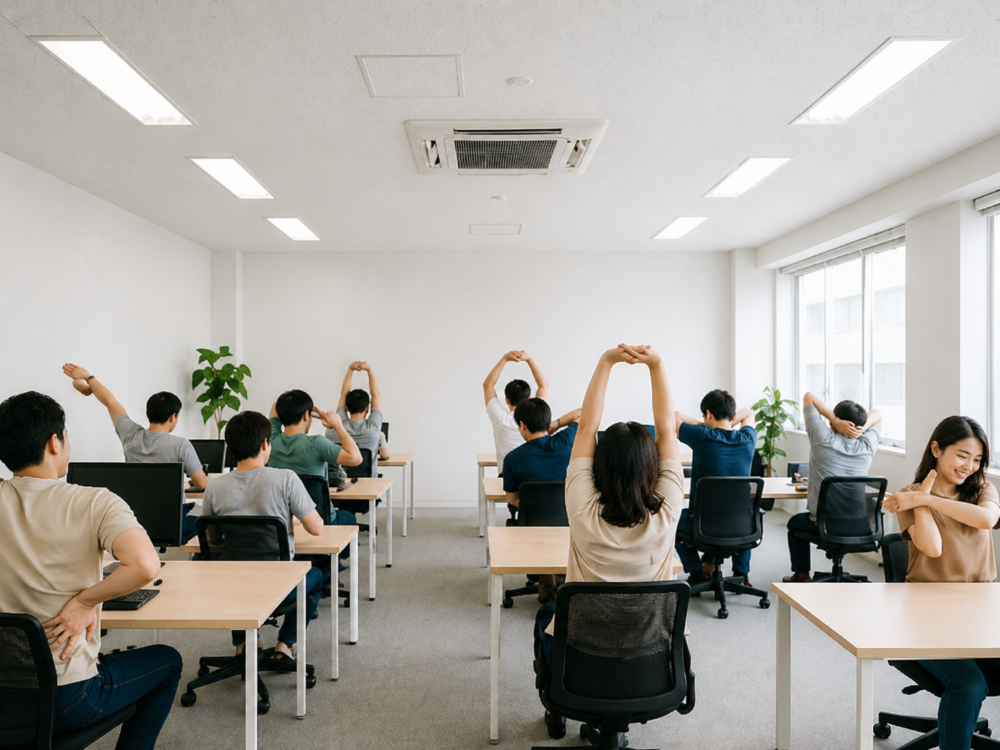
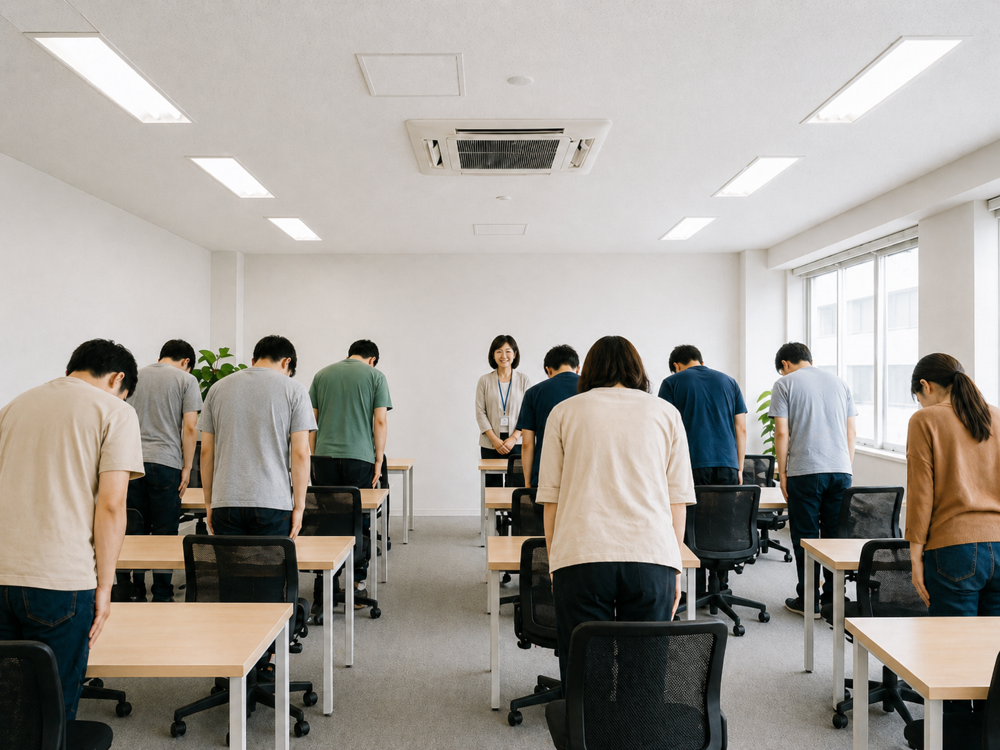

資料のセット、ラベル貼り、袋詰めなどを手順に沿って進めます。
作業風景


軽作業
一つひとつ、丁寧に積み重ねていく軽作業。
封入、シール貼り、検品、仕分け、梱包など、手を動かしながら進める仕事です。 作業を小さな工程に分け、確認しやすい形にして取り組みます。
01 / 軽作業
手を動かして覚える、無理のない仕事。
はじめての作業でも、スタッフが一緒に工程ごとに確認しながら進めます。集中しやすい環境を整えています。
サンプルや指示書と見比べながら、状態や数量を確認します。
種類や宛先ごとに分け、出荷前の梱包まで丁寧に行います。
繰り返しのある作業も、品質を保ちながら安定して進めます。
IT作業
パソコンで、できることを
少しずつ広げる。
Web制作やデータ入力など、画面の前で進める仕事にも取り組んでいます。実務の前に十分な研修期間があります。また支援員のサポートがありますので、はじめての方でも安心です。
Web・ホームページ関連
ホームページの更新、文章や画像の整理、WordPressでの記事投稿など、画面の前で進める作業に取り組みます。
データ入力・整理
データの入力やチェック、リストの整理など、こつこつ正確に進める作業を担当します。
利用者の声
ここで、自分のペースを
見つけました。
リンクワークスを利用されている方の声をご紹介します。
就労6ヶ月目・ＩＴ作業担当
西口（40代・男性）
長い間、仕事から離れていたので最初は戸惑いました。でも自分のペースで進められるので、少しずつリズムをつかめています。
Aさん（40代・IT作業担当）
就労6ヶ月目・軽作業担当
仙台東口（30代・女性）
手を動かす作業が自分に合っていると気づきました。スタッフの方が丁寧に教えてくれるので、毎日落ち着いて取り組めています。
Tさん（30代・軽作業担当）
就労6ヶ月目・ＩＴ作業担当
西口（20代・女性）
パソコン作業はうまくできるか心配でしたが、できることが少しずつ増えてきて、今がいちばん楽しいと感じています。
Bさん（20代・IT作業担当）
Aさんの一日（WEB制作のお仕事）
無理のないリズムで、毎日を過ごす。
体調にあわせてその日の予定を調整しながら、自分のペースで取り組めます。支援員と予定を共有して、休憩や振り返りの時間も大切にしています。
-

朝礼
9:20までに来所し、身支度を整えて、仕事の準備をしておきます。 支援員から朝の報告をうけて、今日の予定を確認します。朝礼後はそれぞれの業務に入り、必要に応じて支援員がサポートします。
-

午前の休憩
午前の休憩・10分間の休憩があります。ストレッチなどして体をほぐして気持ちも体もリフレッシュ。
-
.png)
昼休憩
しっかり休み、午後の作業に備えます。 体調や困っていることがあれば、休憩前後に支援員へ相談できます。
-

作業開始
午前中の続きや確認作業を進めます。 進捗を共有しながら、納品前のチェックや修正にも取り組みます。
-
午後の休憩
5分間の休憩があります。あと少しで作業終了です。最後まで頑張りましょう。
-

終礼
作業内容を整理し、できたことや次回に続ける内容を確認します。お疲れさまでした、本日終了です。
お問い合わせ
まずは見学から、お気軽にどうぞ。
「雰囲気を見てみたい」「自分に合う仕事を知りたい」など、どんな段階のご相談でも歓迎します。